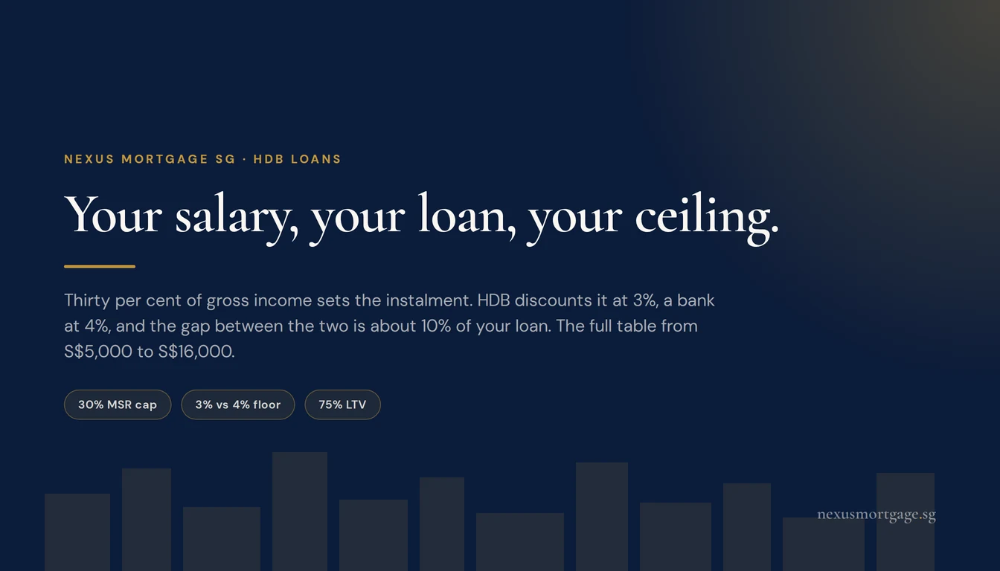
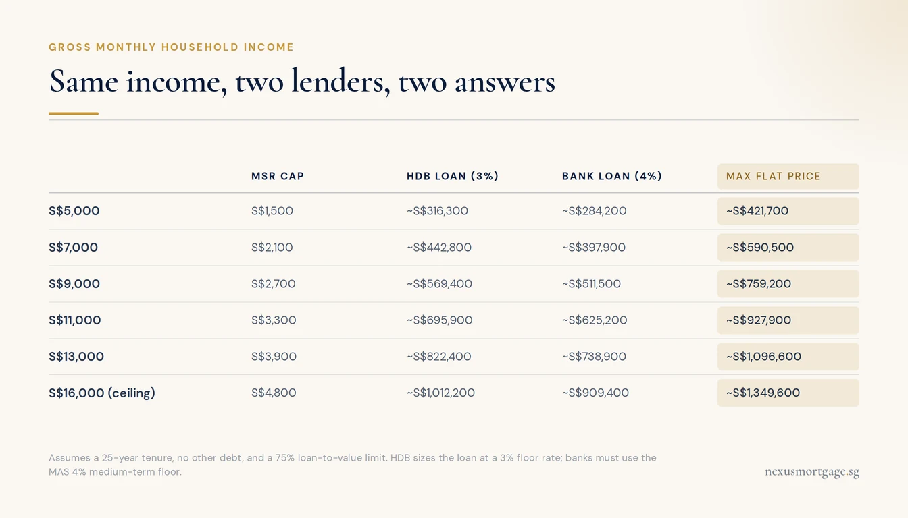
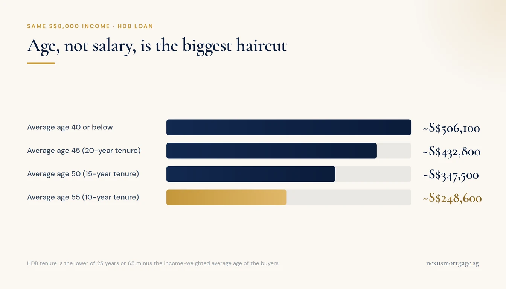
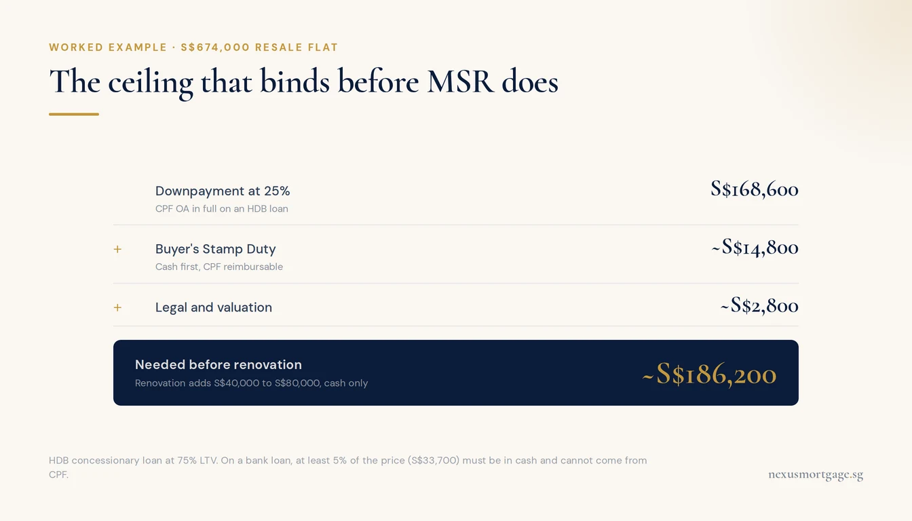

How Much HDB Loan Can I Get on My Salary? The 2026 Table

Take 30% of your gross monthly household income. That is your Mortgage Servicing Ratio cap and it is the number every HDB loan calculation starts from. HDB turns it into a loan by discounting it at a 3% floor rate over up to 25 years; a bank discounts the same figure at the MAS 4% floor, which is why the bank number is roughly 10% smaller. Divide the loan by 0.75 for the maximum flat price. On S$8,000 that is about S$506,000 of HDB loan and a flat of about S$674,000. Three things move it hard: your age, other debt above 25% of income, and how much CPF you actually have.
The Table: Salary to Flat Price

The lender charging 2.6% lends you more than the lender charging 1.40%.
Every figure below assumes a 25-year tenure, no other debt, and two buyers or one, it makes no difference to the arithmetic. Income is gross monthly household income before CPF deduction, which is what HDB and every bank assess on.
| Gross monthly income | MSR cap (30%) | HDB loan (3% floor) | Bank loan (4% floor) | Max flat price on HDB loan |
|---|---|---|---|---|
| S$5,000 | S$1,500 | ~S$316,300 | ~S$284,200 | ~S$421,700 |
| S$6,000 | S$1,800 | ~S$379,600 | ~S$341,000 | ~S$506,100 |
| S$7,000 | S$2,100 | ~S$442,800 | ~S$397,900 | ~S$590,500 |
| S$8,000 | S$2,400 | ~S$506,100 | ~S$454,700 | ~S$674,800 |
| S$9,000 | S$2,700 | ~S$569,400 | ~S$511,500 | ~S$759,200 |
| S$10,000 | S$3,000 | ~S$632,600 | ~S$568,400 | ~S$843,500 |
| S$11,000 | S$3,300 | ~S$695,900 | ~S$625,200 | ~S$927,900 |
| S$12,000 | S$3,600 | ~S$759,200 | ~S$682,000 | ~S$1,012,200 |
| S$13,000 | S$3,900 | ~S$822,400 | ~S$738,900 | ~S$1,096,600 |
| S$14,000 | S$4,200 | ~S$885,700 | ~S$795,700 | ~S$1,180,900 |
| S$15,000 | S$4,500 | ~S$949,000 | ~S$852,500 | ~S$1,265,300 |
| S$16,000 (ceiling) | S$4,800 | ~S$1,012,200 | ~S$909,400 | ~S$1,349,600 |
Two lines to read carefully. The S$16,000 row is the ceiling, not a coincidence: that is the household income ceiling for a new subsidised flat, the HDB concessionary loan and the CPF Housing Grant, raised from S$14,000 on 24 August 2026. Singles aged 35 and above are assessed at S$8,000. And the bank column exists for everyone, including households above the ceiling, because an HDB resale flat has never had an income cap on the purchase itself.
The last column excludes stamp duty, legal fees, renovation and grants. It is a borrowing limit, not a budget.
How the Number Is Built
There is no mystery in it. Four steps, in this order.
- Gross monthly household income × 30%. That is the Mortgage Servicing Ratio, which applies to every HDB flat and every Executive Condominium purchase, whether the loan comes from HDB or a bank. Variable income (commission, bonus, self-employed) is haircut by 30% before the 30% is applied, so a S$3,000 basic plus S$2,000 commission is assessed at S$4,400, not S$5,000.
- Discount that instalment at the stress rate. HDB uses a floor of 3% p.a. Banks use the MAS medium-term floor of 4% p.a. Neither is the rate you pay.
- Over the tenure. Up to 25 years for an HDB flat, from HDB or a bank, and cut further by age.
- Divide by 0.75. The loan-to-value limit is 75% for an HDB concessionary loan (down from 80% since 20 August 2024) and 75% for a first bank-financed property. So the loan is three-quarters of the price, and the price is the loan divided by 0.75.
That fourth step is where the popular cheat sheets stop, and it is the step that quietly assumes you have the other 25% sitting somewhere. Hold that thought for the section below.
Why HDB Lends More Than the Bank
Same income, same instalment cap, same tenure, and the HDB number comes out about 10% larger every single time. The reason is one line in each rulebook.
- HDB computes your eligible loan at the higher of 3% p.a. or the prevailing concessionary rate. That floor was introduced on 30 September 2022. The concessionary rate is 2.6% p.a., pegged at the CPF Ordinary Account rate plus 0.1%, so 3% is what binds.
- Banks must compute at the MAS medium-term interest rate floor of 4% p.a. for residential property, regardless of the rate on the package they are selling you.
The irony sits right there: the lender charging you 2.6% will lend you more than the lender charging you 1.40%. On a S$500,000 loan over 25 years, a 1.40% fixed bank package costs roughly S$1,976 a month against roughly S$2,268 on the HDB loan. The bank is materially cheaper to service and materially stingier on quantum.
Which one you should take is a separate question from which one lends more, and we work it through properly in HDB loan versus bank loan. The short version: the HDB loan lets the entire 25% downpayment come from CPF Ordinary Account, carries no lock-in and no penalty, and can be refinanced to a bank at any time. A bank loan requires a minimum 5% of the price in hard cash and cannot be moved back to HDB, ever. It is a one-way door, and most first-timers should walk through it later rather than sooner.
The Age Haircut Nobody Prices In

A 55-year-old couple on S$8,000 borrows half what a 35-year-old couple on S$8,000 borrows.
Every cheat sheet in circulation assumes 25 years. HDB does not. Your tenure is the lower of 25 years, or 65 minus the income-weighted average age of the buyers. So the 25-year row only holds if that average age is 40 or below.
On an unchanged S$8,000 income, here is what the calendar does to the loan.
| Average buyer age | Tenure | Max HDB loan | Against the 25-year figure |
|---|---|---|---|
| 40 or below | 25 years | ~S$506,100 | Full |
| 45 | 20 years | ~S$432,800 | −S$73,300 |
| 50 | 15 years | ~S$347,500 | −S$158,600 |
| 55 | 10 years | ~S$248,600 | −S$257,500 |
A 55-year-old couple on S$8,000 has exactly half the borrowing power of a 35-year-old couple on S$8,000. That is not a scenario for later, it is the single most common reason a right-sizing or second-time application comes in far below what the household expected.
On the bank side the same age pressure shows up differently: if the tenure runs past age 65, or past 25 years on an HDB flat, the loan-to-value limit drops from 75% to 55%, which pushes the downpayment from 25% to 45%. That is a cash problem, not a quantum problem, and it lands at completion.
The Debt Band That Costs You Nothing
This one runs against the standard advice, so read it precisely.
On an HDB flat, two limits apply at once: MSR at 30% of gross income for the housing loan, and TDSR at 55% for the housing loan plus every other monthly debt obligation. MSR is the smaller number, so it binds first and it binds almost always.
The gap between them is 25 percentage points of gross income. Inside that gap, other debt is free. It does not reduce your housing loan by a single dollar.
| On S$8,000 gross income | Other monthly debt | Binding limit | Max bank loan |
|---|---|---|---|
| No debt | S$0 | MSR | ~S$454,700 |
| Car loan | S$1,200 | MSR | ~S$454,700 (unchanged) |
| At the crossover | S$2,000 | MSR = TDSR | ~S$454,700 (unchanged) |
| Past the crossover | S$2,500 | TDSR | ~S$360,000 |
So the blanket advice to clear every debt before applying for an HDB flat is often wasted effort. What matters is whether your total other commitments exceed 25% of gross monthly income. Below that line, paying off the car early buys you nothing on the mortgage. Above it, every S$100 a month you clear is worth roughly S$18,900 of extra loan at the 4% floor.
Two things that quietly count as debt and catch people out: the minimum monthly payment on every credit card, even at zero balance in some assessments, and any loan you have guaranteed for a family member. Both show up on your credit bureau file and both get counted.
Note that TDSR does not apply to the HDB concessionary loan itself, which is assessed on MSR alone. That is another quiet advantage of the HDB route for a household carrying meaningful other commitments.
The Second Ceiling That Binds First

Two buyers on S$8,000 accumulate that much CPF OA in roughly eight years.
Here is the part the tables never show. There are two ceilings on what you can buy, and the lower one wins.
- The loan ceiling. What MSR lets you borrow. That is the whole table above.
- The cash and CPF ceiling. What you can actually put down on day one.
For most first-timers, the second one binds long before the first. Take the S$8,000 household at the top of its range, buying a resale flat at S$674,000.
| What is due at purchase | Amount | Payable from |
|---|---|---|
| Downpayment at 25% | S$168,600 | CPF OA in full, on an HDB loan |
| Buyer's Stamp Duty | ~S$14,800 | Cash first, reimbursable from CPF OA |
| Legal and valuation | ~S$2,800 | CPF OA or cash |
| Before renovation | ~S$186,200 | |
| Renovation and furnishing | S$40,000 to S$80,000 | Cash only |
A household earning S$8,000 has roughly S$1,840 a month going into two Ordinary Accounts. Accumulating S$168,600 of OA from scratch takes the better part of eight years. Which is why the honest version of the question is not "how much can I borrow" but "how much do I have, and what does that let me borrow against". Our CPF OA guide covers what can and cannot be drawn, and the accrued interest article covers what using it costs you at resale.
If you are buying on a bank loan rather than an HDB loan, add one hard constraint: at least 5% of the purchase price must be cash, S$33,700 on that S$674,000 flat, and no amount of CPF substitutes for it.
Where Grants Fit, and Where They Do Not
Grants raise the second ceiling, not the first. They land in your CPF Ordinary Account, count toward the downpayment and the price, and do nothing at all to the MSR cap or the loan quantum. A S$40,000 grant means S$40,000 more flat on the same loan, not a bigger loan.
Three schemes, three separate income tests, and only some of them moved in August 2026:
- Enhanced CPF Housing Grant. Up to S$120,000 for families, tapering as income rises. Ceiling of S$9,000, and it did not move on 24 August 2026. It is now a full S$7,000 below the flat eligibility ceiling.
- CPF Housing Grant (resale). Up to S$80,000 for a 2- to 4-room flat, up to S$50,000 for 5-room and larger. Ceiling raised to S$16,000 in step with the flat ceiling.
- Proximity Housing Grant. Up to S$30,000 living with parents or children, S$20,000 living within 4km. No income ceiling, and never had one.
The trap is the first bullet. A household on S$15,500 gained a BTO ballot, an HDB loan and possibly the CPF Housing Grant on 24 August, and gained zero EHG. If you budgeted around a six-figure grant on the strength of the headline, the shortfall shows up at completion, which is the worst possible moment to find it. Model your cash position with EHG at zero unless your assessed income is at or below S$9,000, and take the figure from your HFE letter rather than from any table circulating online, including the intermediate bands, which third-party sources routinely get wrong.
What to Do With the Number
- Find your row, then apply the two haircuts. Variable income is assessed at 70%. Average buyer age above 40 cuts the tenure. Do both before you shop.
- Check your other debt against 25% of gross income. Below the line, leave it alone. Above it, clearing debt is the highest-return thing you can do before applying.
- Count the CPF, not the salary. Pull your latest OA balances for both buyers and work backwards from there. The loan ceiling is theoretical until the downpayment exists.
- Get the HFE letter and an In-Principle Approval, both. The HFE letter tells you what HDB will lend and what grants you qualify for. An IPA tells you what a bank will lend, at what rate and on what tenure. The two numbers are different, and you want both in hand before you sign an Option to Purchase, not after.
- If you are near the ceiling, watch the assessment window. HDB averages gross household income over the preceding 12 months. A bonus landing inside that window can push a household from S$15,800 to above S$16,000 and take the flat, the loan and the grant with it.
We run IPAs across every lender at once, at no cost to you, and we will tell you plainly when the HDB loan is the better instrument even though it earns us nothing. If you want the number for your own situation rather than the row in a table, send us the details and we will work it through.
This article is general information for Singapore buyers and borrowers. It is not financial advice. Loan quantums are illustrative, assume a 25-year tenure unless stated, no other debt obligations unless stated, HDB's 3% floor rate or the MAS 4% medium-term floor rate as labelled, and a 75% loan-to-value limit. They are not an offer of credit. MSR, TDSR and LTV are administered by MAS; income ceilings, HFE assessment, grants and the concessionary loan are administered by HDB and CPF. Figures are current as at 11 September 2026 and reflect the income ceilings effective 24 August 2026. Confirm your own eligibility, grant band, tenure and loan quantum with HDB and your lender in writing. Sources: HDB: Financing a Flat Purchase, MAS Notice 645 (TDSR), MAS Notice 632 (Residential Property Loans), CPF: Home Ownership.

About the author — Dan Ler has advised on Singapore home loans since 2017 at Nexus Mortgage SG, an independent brokerage comparing 16+ MAS-regulated lenders. Nexus has facilitated 500+ home loans across HDB, EC, private condo and landed property segments. Banks pay Nexus on disbursement, so there is no cost to the borrower.